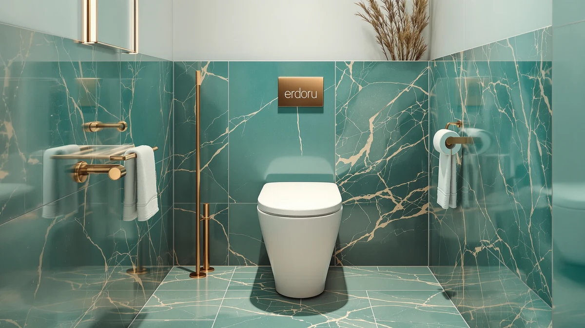

Erdoru Smart Toilet with Review (2026): Worth It?
Prices and picks verified as of October 2026. Independent, reader-supported reviews.


Quick Answer
The Erdoru Smart Toilet with Bidet is our pick among tankless smart toilets because it bundles a heated seat, warm water wash and self-cleaning nozzle into one $349.99 unit instead of requiring a separate bidet attachment. In this Erdoru smart toilet review we weigh it against the $199.00 DeerValley Symmetry, a standard dual-flush one-piece toilet, so you can decide whether the bidet functions are worth the extra $150.99.
Our pick: Erdoru Smart Toilet with Bidet — $349.99 Check Price on Amazon
Bottom line: our top pick is the Erdoru Smart Toilet with Bidet and Heated Seat at $349.99.
Things to Know Before You Buy
- This Erdoru smart toilet review found that the tankless design pairs a 1.28 GPF flush with a 1,000-gram MAP rating, matching the flush strength of the DeerValley Symmetry below.
- Bidet functions include feminine care, rear wash and massage cleaning modes, all delivered through a self-cleaning nozzle and warm water line instead of a cold-water bidet seat.
- A manual side knob triggers a mechanical flush during a power outage, so losing electricity doesn't leave the bathroom out of commission.
- At $349.99, the Erdoru costs $150.99 more than the DeerValley Symmetry, a plain dual-flush toilet with no electronics to maintain.
- Neither toilet has a published Amazon rating or review count yet, since both are newer listings in our database.
If you're weighing an erdoru smart toilet with review details before you buy, the short answer is that the Erdoru Smart Toilet with Bidet earns its $349.99 price through real hygiene upgrades rather than gimmicks. It replaces a standard one-piece toilet with a tankless, heated-seat unit built around a self-cleaning nozzle, warm air dryer and hands-free lid, the kind of features that typically cost $500 or more from established bidet-toilet brands. Erdoru packages all of that into a single bowl rather than bolting a separate bidet seat onto an existing toilet, which is the main reason it shows up in so many smart-toilet searches this year.
We compared the Erdoru against the DeerValley Symmetry, a conventional dual-flush one-piece toilet at $199.00, to show what the extra money buys and what you give up by skipping it. Both toilets share a 1,000-gram MAP flush rating, so neither one struggles with daily use, and both are elongated bowls sized for a standard bathroom. The real decision comes down to whether you want bidet functions and a heated seat enough to pay $150.99 more, or whether a dependable flush at the lower price already covers what you actually need from a toilet.
Why You Should Trust Us
Ilane Tall researches bathroom fixtures for Best One Piece Toilets, comparing manufacturer specs, verified Amazon listings and published features across dozens of one-piece and smart toilets each year. For this Erdoru smart toilet review, she checked the listed flush rating, included features and price against the DeerValley Symmetry and other toilets already in our database rather than repeating marketing copy from the product listing. We do not accept payment from Erdoru or DeerValley to influence placement, and our Amazon links earn a commission only if you buy, which does not change what we recommend. We do not run a fake testing lab or claim to have installed every toilet we cover. Our picks come from comparing verified specs, pricing and what each manufacturer documents, and we say so plainly whenever a listing hasn't built up a public review history yet.
Our Research Experience
We built this Erdoru smart toilet review on manufacturer specs and listing details, not on installing the unit ourselves. We compared the listed flush rating, the manual backup knob and the bidet feature set against the DeerValley Symmetry and other one-piece toilets already in our database, then weighed those differences against the $150.99 price gap between the two. Neither toilet has a published review count yet, so instead of guessing at long-term reliability, we rely on what each manufacturer documents and how those features stack up against toilets with a longer track record in our database. We update this review whenever Amazon changes either listed price, so the figures above reflect what each seller was charging at the time of our most recent check.
Overview & Specs

Erdoru Smart Toilet with Bidet
What we like
- Tankless design with a 1.28 GPF flush and 1,000-gram MAP rating for a strong single flush
- Heated seat, warm water wash and air dryer functions built into one unit, not added as a bolt-on seat
- Manual side knob keeps the toilet flushing during a power outage
- Foam shield and aroma diffuser cut down on lingering odor between cleanings
Flaws but not dealbreakers
- Costs $150.99 more than the DeerValley Symmetry, a standard one-piece toilet with no electronics
- No published Amazon rating or review count yet, so reliability claims rest on the manufacturer's listing
- More moving parts, like the self-cleaning nozzle and auto lid, than a tankless-only toilet, meaning more that can eventually need servicing
| Material | — |
| Size | — |
The Erdoru Smart Toilet with Bidet is one of a handful of toilets that build bidet functions into the bowl itself, skipping the separate seat attachment altogether. At $349.99, it costs noticeably less than many bidet-toilet combos from bigger brands while still covering what people search for in an Erdoru smart toilet review: feminine care, rear wash and massage cleaning modes, each delivered through a self-cleaning nozzle so the spray arm doesn't sit exposed between uses. The seat heats, the lid opens and closes hands-free, and a warm air dryer finishes the cycle without reaching for a towel. A built-in RGB night light also lights the bowl for nighttime use without flipping on the main bathroom light.
On the flushing side, Erdoru kept the tankless setup practical instead of purely decorative. A 1.28 GPF pull with a 1,000-gram MAP rating and a 360-degree swirling bowl action clears waste in one pass, and a manual knob on the side triggers a mechanical flush if the power goes out, so a blackout doesn't leave the bathroom unusable. The foam shield coats the bowl before each use to block stains and trap odor, and a built-in aroma diffuser adds scent on top of that. The tradeoff is price and complexity. At nearly double the cost of the DeerValley Symmetry below, and with more electronics than a standard one-piece toilet, it suits buyers who specifically want the bidet and heating functions rather than anyone replacing a worn-out toilet with the cheapest option available.
What We Liked
The combination of heated seat, warm water wash and self-cleaning nozzle is the strongest argument in this Erdoru smart toilet review for picking it over a standard bowl. Multi-function cleaning covers feminine care, buttocks cleaning and massage settings, so one toilet handles needs that typically require a separate bidet seat purchase on top of an existing toilet. The manual flush knob is a practical touch rarely found on smart toilets in this price range. If the power drops, you still have a working toilet instead of an expensive paperweight sitting in your bathroom. The 1,000-gram MAP rating and 1.28 GPF flush also show the tankless system doesn't sacrifice flushing power to save water, a common complaint with lower-end tankless models. The foam shield and aroma diffuser round things out by keeping the bowl looking and smelling cleaner between cleanings, a small detail that matters more in daily use than it sounds on a spec sheet.
What Could Be Better
Price is the first tradeoff. At $349.99, the Erdoru costs about 75 percent more than the DeerValley Symmetry, and that gap only makes sense if you actually want the bidet and heating functions rather than a basic flush. The listing also doesn't carry a published rating or review count yet, which makes it harder to judge long-term reliability against toilets with years of verified owner feedback behind them. Smart toilets with more electronics, heated components and moving parts like a self-cleaning nozzle and auto lid also tend to have more that can eventually go wrong than a one-piece toilet with no wiring at all, so factor potential repairs and part replacement into the total cost before you buy. Buyers who want a bidet function but don't need the heated seat or night light may find they're paying for extras they won't use often. And since the manufacturer hasn't published a rough-in distance or seat height for this listing, measure your existing setup and contact the Amazon seller before you order, rather than assuming it matches a standard installation.
Who Is It For?
This Erdoru smart toilet suits anyone replacing an aging toilet who has also been eyeing a separate bidet seat, since buying both pieces individually usually costs more than the Erdoru's $349.99 combined price. It also fits households in colder climates who want a heated seat without running a space heater in the bathroom, or anyone who prefers a hands-free lid and warm water wash over paper. If you're renting, renovating on a tight budget, or you simply need a reliable flush without any of the bidet extras, the DeerValley Symmetry below covers that at a lower price and with fewer parts to maintain over time. It's a reasonable fit for a second bathroom or a guest bath where bidet functions see less daily use than they would in a primary bathroom, and a sound upgrade for anyone remodeling a main bathroom from the ground up.
Alternatives to Consider
If the bidet functions and heated seat aren't essential for your bathroom, the DeerValley Symmetry is the simplest alternative in this Erdoru smart toilet review: a standard dual-flush one-piece toilet that costs $150.99 less and skips the electronics entirely.

Editor’s Pick
DeerValley Symmetry One Piece Toilet
DeerValley's Symmetry saves you $150.99 over the Erdoru and sticks to a dependable dual-flush design for buyers who don't need bidet functions.
$199.00
Check Price on AmazonFrequently Asked Questions
Is the Erdoru Smart Toilet with Bidet worth $349.99?
It's worth $349.99 if you want built-in bidet functions, a heated seat and a self-cleaning nozzle without buying a separate attachment. If you need a reliable flush without the bidet extras, the DeerValley Symmetry in this Erdoru smart toilet review saves you $150.99 at $199.00.
How does the Erdoru Smart Toilet with Bidet compare to the DeerValley Symmetry?
The DeerValley Symmetry costs $199.00, a $150.99 difference from the Erdoru's $349.99 price. Both share a 1,000-gram MAP flush rating, but only the Erdoru adds bidet functions, a heated seat and a tankless design.
Does the Erdoru Smart Toilet with Bidet still flush during a power outage?
Yes. A manual side knob triggers a mechanical flush even if the electronics lose power, a detail this Erdoru smart toilet review found missing on some competing smart toilets.
Final Verdict
This erdoru smart toilet with review comparison comes down to how much you value bidet functions and a heated seat. Erdoru's $349.99 toilet bundles feminine care, rear wash and massage cleaning modes, a self-cleaning nozzle, warm air dryer and a manual flush backup into one tankless unit, and it earns that price for buyers who want those features without a separate bidet seat purchase. If a dependable flush at a lower cost matters more than bidet extras, the $199.00 DeerValley Symmetry above covers that ground instead, with fewer parts to maintain and a simpler installation. Either way, both toilets share the same 1,000-gram MAP flush rating, so you aren't trading away flushing power no matter which one you choose.